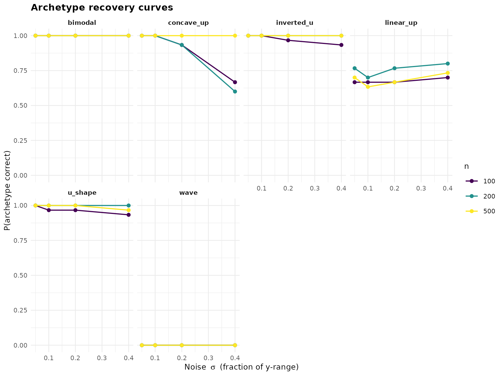
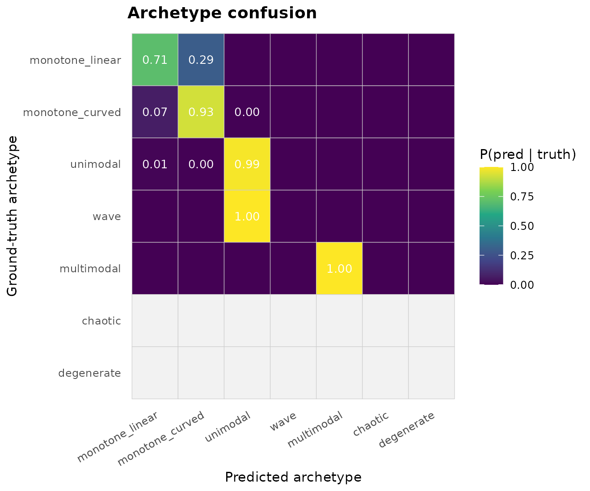
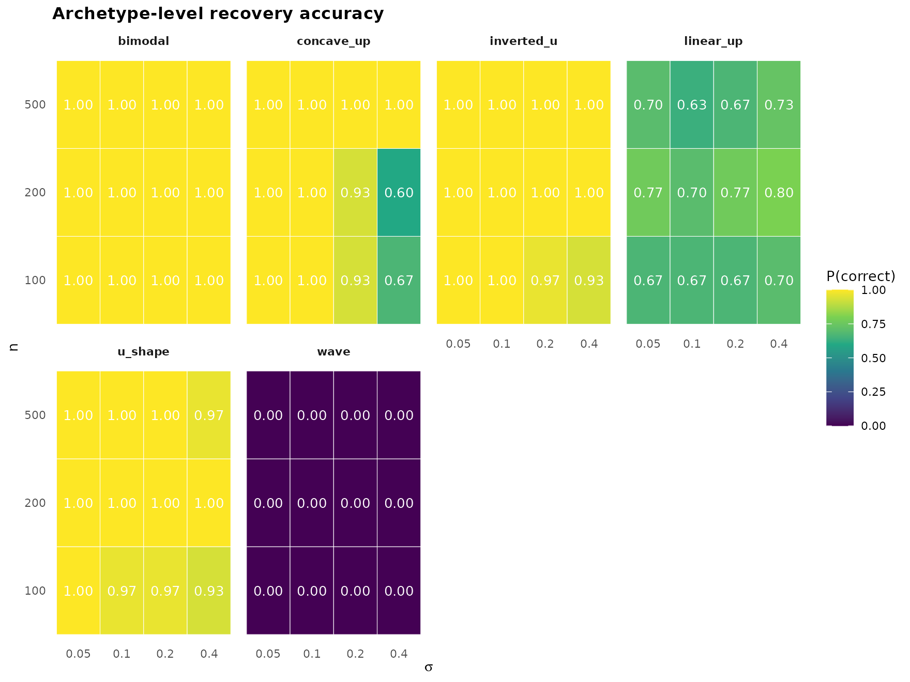

Shape-recognition sensitivity study
Source:vignettes/shape-recognition-sensitivity.Rmd
shape-recognition-sensitivity.Rmdjanusplot() assigns every fitted smooth to one of 24
shape categories via a (n_turning_points, n_inflections)
dispatch with additional
(monotonicity_index, convexity_index) disambiguation for
the monotone cases (see the janusplot vignette for the full
definition of the indices). How reliably does this classifier recover
the ground-truth shape of a noisy sample? This vignette answers the
question with a full-factorial sensitivity sweep.
Design
For each combination of ground-truth shape, sample size
n, and noise level sigma, the sweep:
- Generates
npoints from the noiseless canonical curve onx ∈ [0, 1], withynormalised to[0, 1]so thatsigmais the fraction of y-range that Gaussian noise contributes — an SNR-comparable scale across shapes. - Fits
mgcv::gam(y ~ s(x), method = "REML"). - Classifies the fit via
janusplot_shape_metrics(). - Records correctness at the fine (24-category) and archetype (7-family) levels.
The design factors are orthogonal and replicated. See
?janusplot_shape_sensitivity for the function surface. The
14 canonical ground-truth shapes cover five of the seven archetypes
(chaotic and degenerate have no realistic
deterministic generator).
library(janusplot)
library(ggplot2)
janusplot_shape_sensitivity_shapes()
#> [1] "linear_up" "linear_down" "convex_up" "concave_up" "convex_down"
#> [6] "concave_down" "s_shape" "u_shape" "inverted_u" "skewed_peak"
#> [11] "broad_peak" "wave" "bimodal" "bi_wave"Pre-registered hypotheses
The sweep’s hypotheses are pinned in simulation/PLAN.md
(Scenario 4):
-
H1. At
n = 500,sigma = 0.05, archetype accuracy exceeds 0.90 for every shape. -
H2. Fine-category accuracy exceeds 0.75 at
n = 500,sigma = 0.05for monotone + unimodal shapes; wave and multimodal tolerate less noise. -
H3. Rippled variants require
n ≥ 200andsigma ≤ 0.10to resolve. -
H4. At
sigma = 0.40, archetype accuracy collapses below 0.50 for all but the simplest shapes.
Precomputed demo
The package ships a small-footprint precomputed sweep — 6 shapes (one per non-degenerate archetype) × 3 sample sizes × 4 noise levels × 30 replicates = 2160 fits — so you can explore the API without running the full sweep yourself.
data("shape_sensitivity_demo")
str(shape_sensitivity_demo, vec.len = 2)
#> 'data.frame': 2160 obs. of 14 variables:
#> $ truth : chr "linear_up" "concave_up" ...
#> $ n : int 100 100 100 100 100 ...
#> $ sigma : num 0.05 0.05 0.05 0.05 0.05 ...
#> $ seed : int 2027 2028 2029 2030 2031 ...
#> $ predicted : chr "linear_up" "concave_up" ...
#> $ correct : logi TRUE TRUE TRUE ...
#> $ archetype_truth : chr "monotone_linear" "monotone_curved" ...
#> $ archetype_pred : chr "monotone_linear" "monotone_curved" ...
#> $ archetype_correct : logi TRUE TRUE TRUE ...
#> $ monotonicity_index: num 1 1 ...
#> $ convexity_index : num 0 -0.847 ...
#> $ n_turn : int 0 0 1 1 1 ...
#> $ n_inflect : int 0 0 0 0 2 ...
#> $ error : chr NA NA ...Recovery curves (headline figure)
janusplot_shape_sensitivity_plot(shape_sensitivity_demo,
"recovery_curves")
Every shape is recovered near-perfectly at low noise; the informative picture is where each shape’s curve falls off as sigma grows. The unimodal and monotone-curved families tolerate more noise than the multimodal ones.
Archetype confusion
janusplot_shape_sensitivity_plot(shape_sensitivity_demo,
"confusion_archetype")
The off-diagonals reveal the classifier’s failure modes. A
unimodal truth misclassified as wave or
multimodal means the spline invented extra turning points
under noise.
Archetype-level accuracy grid
janusplot_shape_sensitivity_plot(shape_sensitivity_demo,
"accuracy_grid")
Per-shape heatmap of P(archetype correct) across the
(n, sigma) design. Reading across a row shows the
noise-tolerance profile of one sample size; reading up a column shows
the sample-size sensitivity at one noise level.
Numerical summary
head(janusplot_shape_sensitivity_summary(shape_sensitivity_demo,
level = "archetype"), 10)
#> truth n sigma accuracy
#> 1 bimodal 100 0.05 1.0000000
#> 2 concave_up 100 0.05 1.0000000
#> 3 inverted_u 100 0.05 1.0000000
#> 4 linear_up 100 0.05 0.6666667
#> 5 u_shape 100 0.05 1.0000000
#> 6 wave 100 0.05 0.0000000
#> 7 bimodal 200 0.05 1.0000000
#> 8 concave_up 200 0.05 1.0000000
#> 9 inverted_u 200 0.05 1.0000000
#> 10 linear_up 200 0.05 0.7666667Running your own sweep
The demo is a starting point. For the publication-grade figure use the full default grid (14 shapes × 4 sample sizes × 5 noise levels × 200 reps = 56 000 fits):
# Configure parallel execution (optional) — you control the plan.
future::plan(future::multisession, workers = 4L)
res <- janusplot_shape_sensitivity(parallel = TRUE)
# Save for your paper
saveRDS(res, "shape_sensitivity_full.rds")
janusplot_shape_sensitivity_plot(res, "recovery_curves")Custom shape subsets + cutoffs
Every argument is tunable. Below, we rerun only the bimodal/wave
family under stricter monotonicity thresholds to see whether tightening
mono_strong buys any fine-accuracy improvement for these
categories.
strict <- janusplot_shape_cutoffs(mono_strong = 0.95, curv_low = 0.1)
res_strict <- janusplot_shape_sensitivity(
shapes = c("wave", "bimodal", "bi_wave"),
n_grid = c(200L, 500L),
sigma_grid = c(0.05, 0.10, 0.20),
n_rep = 100L,
cutoffs = strict
)
janusplot_shape_sensitivity_summary(res_strict, level = "fine")References
- Pya, N., & Wood, S. N. (2015). Shape constrained additive models. Statistics and Computing, 25(3), 543–559.
- Calabrese, E. J. (2008). Hormesis: why it is important to toxicology and toxicologists. Environmental Toxicology and Chemistry, 27(7), 1451–1474.
- Milnor, J. (1963). Morse Theory. Princeton University Press.
- Meyer, M. C. (2008). Inference using shape-restricted regression splines. Annals of Applied Statistics, 2(3), 1013–1033.
sessionInfo()
#> R version 4.5.3 (2026-03-11)
#> Platform: x86_64-pc-linux-gnu
#> Running under: Ubuntu 24.04.4 LTS
#>
#> Matrix products: default
#> BLAS: /usr/lib/x86_64-linux-gnu/openblas-pthread/libblas.so.3
#> LAPACK: /usr/lib/x86_64-linux-gnu/openblas-pthread/libopenblasp-r0.3.26.so; LAPACK version 3.12.0
#>
#> locale:
#> [1] LC_CTYPE=C.UTF-8 LC_NUMERIC=C LC_TIME=C.UTF-8
#> [4] LC_COLLATE=C.UTF-8 LC_MONETARY=C.UTF-8 LC_MESSAGES=C.UTF-8
#> [7] LC_PAPER=C.UTF-8 LC_NAME=C LC_ADDRESS=C
#> [10] LC_TELEPHONE=C LC_MEASUREMENT=C.UTF-8 LC_IDENTIFICATION=C
#>
#> time zone: UTC
#> tzcode source: system (glibc)
#>
#> attached base packages:
#> [1] stats graphics grDevices utils datasets methods base
#>
#> other attached packages:
#> [1] ggplot2_4.0.2 janusplot_0.0.0.9000
#>
#> loaded via a namespace (and not attached):
#> [1] vctrs_0.7.3 cli_3.6.6 knitr_1.51 rlang_1.2.0
#> [5] xfun_0.57 S7_0.2.1-1 textshaping_1.0.5 jsonlite_2.0.0
#> [9] labeling_0.4.3 glue_1.8.1 htmltools_0.5.9 ragg_1.5.2
#> [13] sass_0.4.10 scales_1.4.0 rmarkdown_2.31 grid_4.5.3
#> [17] evaluate_1.0.5 jquerylib_0.1.4 fastmap_1.2.0 yaml_2.3.12
#> [21] lifecycle_1.0.5 compiler_4.5.3 RColorBrewer_1.1-3 fs_2.1.0
#> [25] farver_2.1.2 systemfonts_1.3.2 digest_0.6.39 viridisLite_0.4.3
#> [29] R6_2.6.1 bslib_0.10.0 withr_3.0.2 tools_4.5.3
#> [33] gtable_0.3.6 pkgdown_2.2.0 cachem_1.1.0 desc_1.4.3